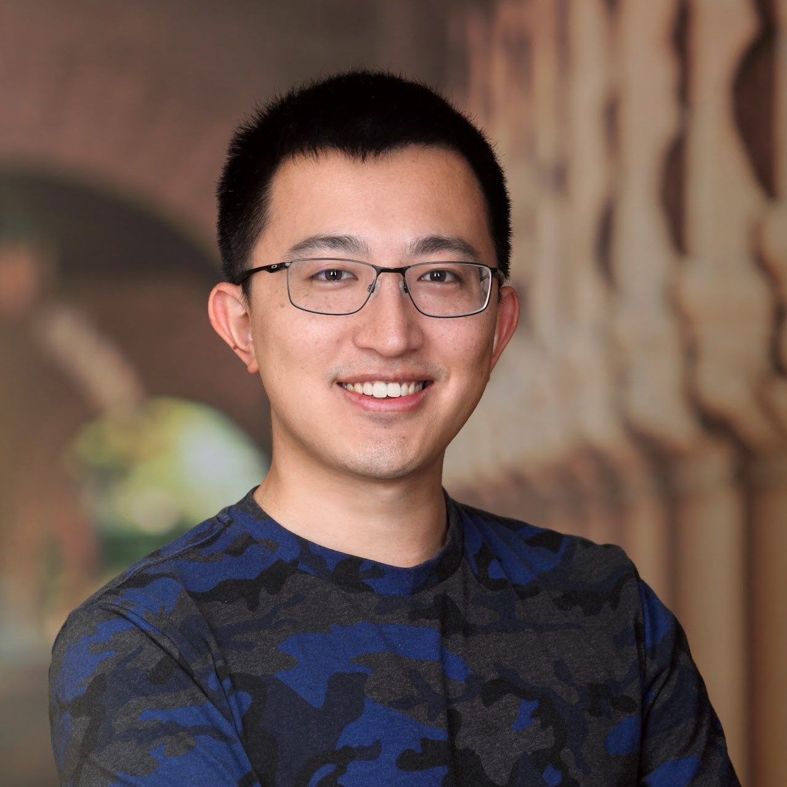
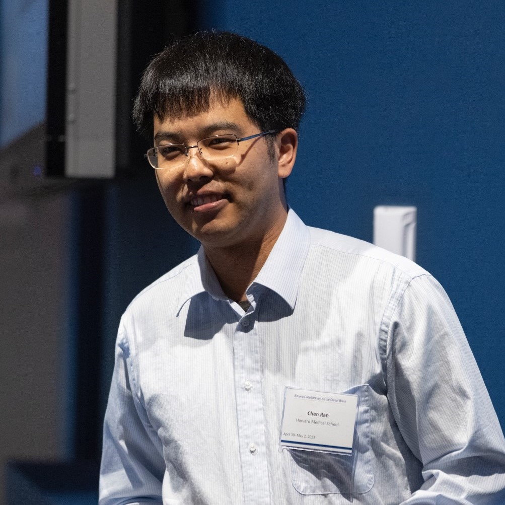
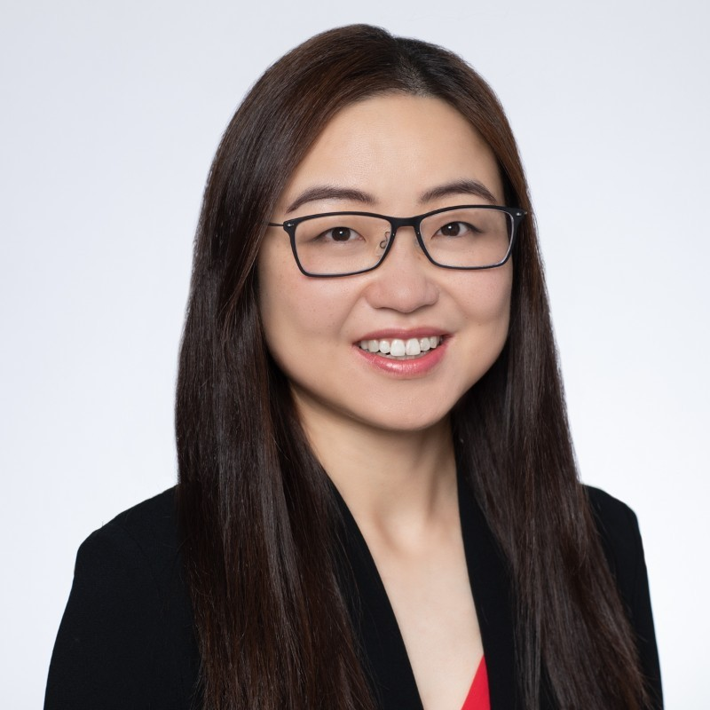
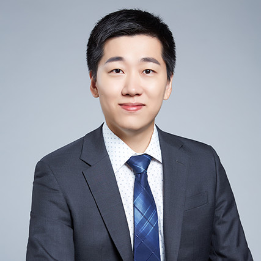
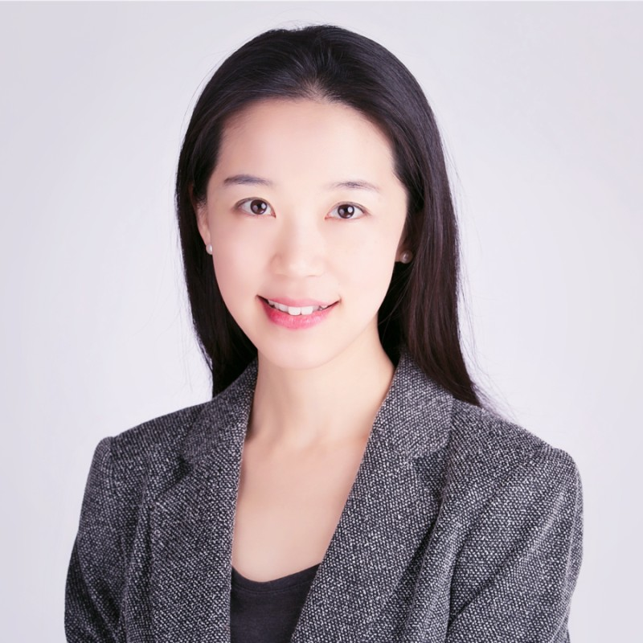

Tsinghua BioMed Reunion | 2023

| Home | Registration | Resources |
清华生物医药北美校友聚会始办于九十年代初，自2011年起形成了年会的传统。2022年9月初，在经历疫情期间的短暂停歇后，这项传统在广大校友的鼎力支持下得到延续和发扬，参会者达二百余名。2023年，新的篇章即将开启，我们诚挚地邀请清华大学生命科学学院、医学院和药学院的校友，以及所有在生物和医药相关领域工作和学习的清华其他院系的校友参加此次聚会。我们希望借此为广大校友搭建一个与新朋相识、和老友相聚的桥梁，为校友间的交流与合作提供一个助力的平台！
与往年类似，组委会将邀请生物和医药领域的清华校友代表通过演讲的形式分享自己在学界或业界的职业发展经验与心路历程，同时为线下与会者安排午餐会和充足的社交时间自由交流。如果您希望我们邀请特定的演讲嘉宾，或者您本人愿意在本次活动中作演讲，又或者您有意为本活动提供个人或企业赞助，我们欢迎您在注册时填选相关项表达您的意向或直接致信我们（biology@tsinghua.org）。演讲嘉宾名单和聚会日程安排将于日后在本站和我们的微信公众号"THUBioMed北美校友聚会"上发布，敬请关注！
Thank you for being patient while we work on confirming the program. A list of confirmed speakers can be found below. Please come back later for the complete program. You can also follow our WeChat official account "THUBioMed北美校友聚会" for updates.

|

|

|

|
李治非高级经理中国科学院控股有限公司 |
王竞Professor and ChairDepartment of Neurobiology UCSD |
洪暐哲ProfessorDepartment of Biological Chemistry/Neurobiology UCLA |
丛乐Assistant ProfessorDepartment of Pathology/Genetics Stanford University |
|  |  |

|
 |
何子淮Assistant ProfessorDepartment of Neurology and Neurological Sciences Stanford University |
冉辰Assistant ProfessorDepartment of Neuroscience The Scripps Research Institute |
刘博闻Co-Founder, COO, and Director of IPAPstem Therapeutics |
Bingqing ZhangSenior DirectorAssay Development/ Product Development/Services Alamar Biosciences |

|

|
 |  |
郝琦Principal Scientist, Associate DirectorCalico Life Sciences |
殷梦雅Senior Data ScientistGenentech |
Derek YuanManaging DirectorLYFE Capital |
Qing ZhangPartnerLDV Partners |
{kind=link}